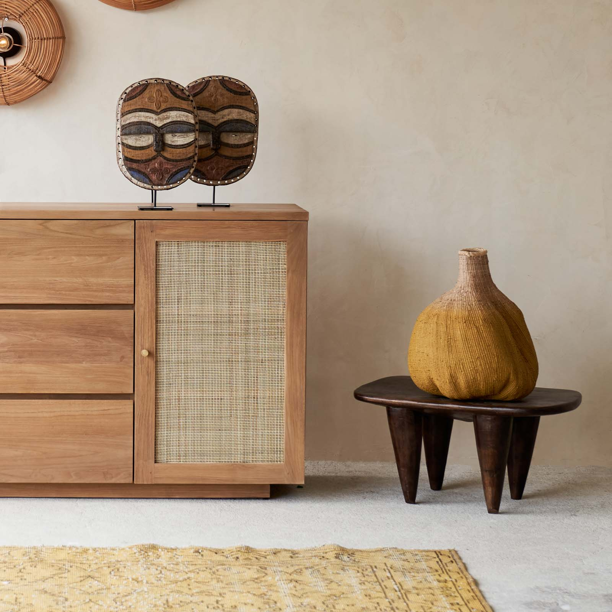
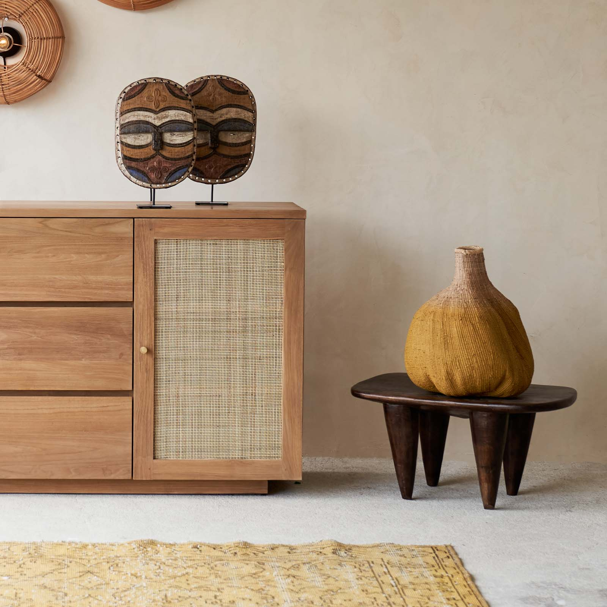

Toguna is a comapny that started in 1992, owned by a lady called Lara. Her love of colors was so profound it was the one that led her into opening Toguna.
The employees she had were mostly encouraged by her love of colors, the company first had one employee for about two months. So Lara and her one employee were
not discouraged by their number rather they still were focusing on their mission which was to " Make the World know What Colors are capable of doing". Their
vision was parallel to their mission, which was "Colors can change the attitude of any thing", they wanted to see the vision in action. Thier target audience was
Fashion lovers and House owners.
.jpg)
 

Toguna's use of colors became more broad in such a way that, they expanded their application of colours.
The concept and love of colours wasn't enough to make them reach their vission and mission. So by expanding
they now started to be more involved in art It's self than colours, by manifacturing goods such as chairs,
masks, shields etc...